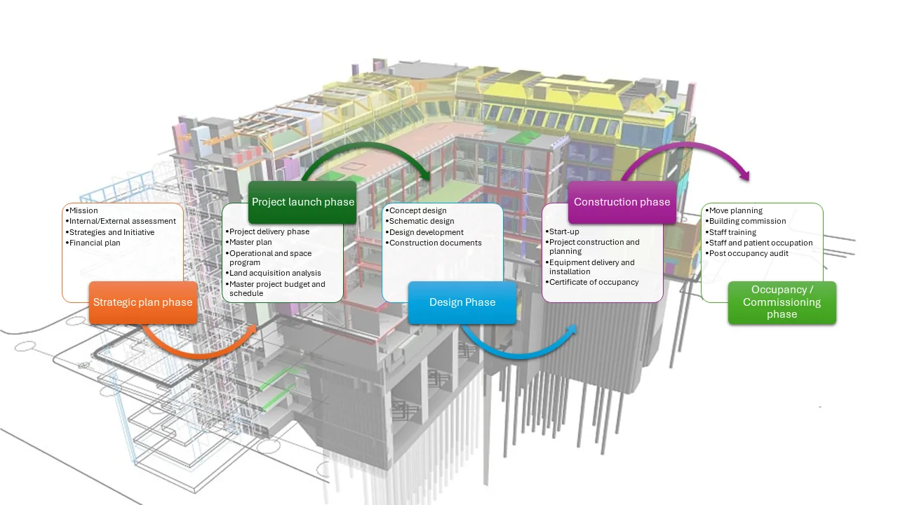

As a Medical Equipment Planner, I’ve seen firsthand how crucial our role is in the successful delivery of healthcare projects. From early planning stages to final handovers, our work ensures that healthcare facilities are well-equipped and ready to serve patients effectively.
While equipment planners can sometimes be involved as early as the Strategic Planning phase where they help identify major capital equipment, establish budgets, and define layout requirements they are typically brought on board at the start of the Design phase. From this point, their role becomes crucial in shaping the project's success. Equipment planners provide key insights and deliverables, including advising architects on the integration of equipment into the architectural design.
A key responsibility is ensuring that all necessary equipment is appropriately accounted for in the architectural plans. This includes creating detailed Room Layout Sheets (RLS), which specifically focus on the placement and fit-out of equipment. RLS are critical documents that ensure the facility's design can accommodate all required furnishings, fixtures, and equipment (FF&E). Whether working directly with architects or as part of a broader project team, the equipment planner’s expertise is vital in ensuring that the healthcare facility is functional, efficient, and ready to meet the needs of its users.
In this article, I’ll take you through the key phases of a healthcare project and explain the important contributions we make at each stage.

1. Strategic Plan Phase
Every successful project begins with a clear strategy. During the strategic plan phase, we define the project's mission and goals. This involves analyzing both internal and external factors to understand the broader landscape and future needs.
At this stage, our role can focus on defining the project's mission, vision, and goals. Key documents produced during this phase include:
- Mission Statement: Outlines the primary purpose and objectives of the project.
- Internal/External Assessment Reports: Analyze the current state and external factors affecting the project.
- Strategic Initiatives and Plans: Define the strategies and initiatives to achieve the project goals.
- Preliminary Budget Estimates: Initial financial projections and cost estimates for the project.
These documents help align the project’s scope and objectives, providing a clear roadmap for all stakeholders.
2. Project Launch Phase
Once the strategy is set, we move to the project launch phase, where the project delivery team is assembled, and a master plan is developed. This phase includes detailed planning for the operational and spatial needs of the facility, as well as land acquisition analysis if necessary.
Here, we collaborate closely with architects to ensure that medical equipment requirements are integrated into the building design. This step is crucial for preventing costly changes later and ensuring that the infrastructure can support all necessary equipment.
During the project launch phase, detailed planning and coordination take place. Key documents include:
- Master Plan: A comprehensive blueprint that includes the project's overall layout and design.
- Operational and Space Program: Detailed descriptions of the operational needs and space requirements for each department.
- Land Acquisition Analysis: Documentation assessing the suitability and requirements for acquiring land.
- Master Budget and Schedule: A detailed breakdown of the project's costs and timeline.
These documents are essential for setting the framework for the project's execution, ensuring all logistical and operational aspects are covered.
3. Design Phase
The design phase is where the project's vision starts to take shape. It begins with the concept design, where we outline the basic layout and placement of departments and major equipment. As we progress to schematic design, we develop detailed plans that translate the project’s needs into a physical form.
In this phase, our work involves creating and refining equipment lists, providing specifications, and ensuring that space requirements are met. We also begin to coordinate with other stakeholders, such as engineers and construction managers, to make sure that every aspect of the design aligns with the technical and operational needs of the facility.
During design development, we fine-tune the details, ensuring that all equipment fits perfectly within the planned spaces. This preparation is vital for creating accurate construction documents, which guide the building process.
The design phase is where the detailed planning documentation is created. The important documents in these four stages are:
a. Concept Design
- Blocking and Stacking Diagrams: Visual representations of how different departments and functions are arranged across the facility's floors. These diagrams help ensure the optimal flow of patients, staff, and equipment.
b. Schematic Design
- Schematic Design Documents: Detailed plans that outline the physical layout of spaces, including room sizes and functional adjacencies. This stage includes preliminary floor plans, sections, and elevations.
- Room Data Sheets (RDS): These documents provide detailed information about each room, including specific equipment, furniture, and finishes. RDS are crucial for understanding the functional requirements of each space and ensuring that all necessary components are considered in the design.
c. Design Development
- Room Layout Sheets (RLS): These sheets go a step further than RDS by including detailed layouts of how equipment and furniture will be positioned within each room. RLS are essential for ensuring that the design accommodates all equipment and that utilities (like power and water) are appropriately placed.
- Equipment Specification Data: Detailed specifications for all medical equipment, including dimensions, power requirements, and installation instructions. This data helps ensure that the infrastructure can support all equipment needs.
- Updated Budget and Procurement Plan: Refined cost estimates and schedules for procuring equipment and materials.
d. Construction Documentation
- Construction Drawings: Complete sets of drawings that provide all necessary information for building the facility, including architectural, structural, mechanical, electrical, and plumbing plans.
- Tender Documents: Documents prepared for the bidding process, including specifications and contracts.
- Finalized RDS and RLS: These documents are updated to reflect any changes made during the design development phase and are used to guide construction.
4. Construction Phase
The construction phase is where everything comes together. This phase includes managing the procurement, delivery, and installation of equipment. It’s a busy time, with a focus on ensuring that all equipment arrives on schedule and is installed correctly.
In the construction phase, the focus shifts to the actual building and installation of equipment. Key documents include:
- Construction Schedules: Detailed timelines for all construction activities.
- Procurement and Delivery Plans: Schedules and plans for the procurement and delivery of equipment and materials.
- Installation Guidelines: Detailed instructions for the installation of equipment, ensuring compliance with design specifications.
- Shop Drawings: Detailed drawings submitted by contractors, showing how specific components will be fabricated and installed.
These documents ensure that the project proceeds smoothly, with all components arriving on time and being installed correctly.
5. Occupancy/Commissioning Phase
The final phase, occupancy/commissioning, is about preparing the facility for use. At this stage, we ensure that all equipment is fully operational and meets safety standards. This includes testing, certification, and staff training.
The occupancy/commissioning phase involves preparing the facility for use. Key documents include:
- Certificates of Compliance: Documentation certifying that all equipment and systems meet safety and operational standards.
- Operation and Maintenance Manuals: Detailed instructions for the operation and maintenance of all equipment and systems.
- Training Manuals: Guides for staff training on new equipment and systems.
- Post-Occupancy Audit Reports: Assessments conducted after the facility is operational, identifying any issues and areas for improvement.
These documents are vital for ensuring that the facility operates safely and efficiently from day one.
At the end
As a Medical Equipment Planner, my work is integral to the success of healthcare projects. By working closely with architects, engineers, and healthcare providers, we ensure that facilities are equipped to provide top-quality care. This collaborative effort is essential for creating healthcare environments that meet the needs of today and tomorrow.
If you're interested in the intricacies of healthcare project planning or have any questions, feel free to connect with me. Let’s explore how careful planning and teamwork can lead to successful healthcare projects.
References: For further information and in-depth guidelines on equipment planning in healthcare facilities, check out the Equipment Planning Guidelines.